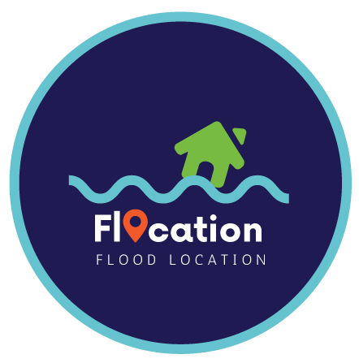

|  |
Flocation merupakan bagian dari PYP 2019 Exhibition project - Al Jabr Islamic School. Idenya adalah menghasilkan peta yg dapat membantu komunitas sekitar lingkungan sekolah Al Jabr dalam menginformasikan kejadian bencana dan route alternatif. Peta yg ditampilkan merupakan hasil dari komunitas OpenStreetMap dan peta banjir berasal dari BPBD DKI Jakarta. Disclaimer: Luasan banjir dipetakan menurut tingkat Rukun Warga (RW), walaupun di beberapa wilayah luasan banjir hanya mencakup beberapa RT Bukan keseluruhan RW (dalam satu RW terdapat beberapa RT) |